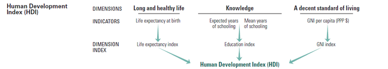

Human Development Index - HDI
The Human Development Index (HDI) is a statistic developed and compiled by the United Nations to measure and various countries' levels of social and economic development. It is composed of four principal areas of interest: mean years of schooling expected years of schooling, life expectancy at birth, and gross national income per capita. This index is a tool used to follow changes in development levels over time and to compare the development levels of different countries.

The health dimension is assessed by life expectancy at birth, the education dimension is measured by mean of years of schooling for adults aged 25 years and more and expected years of schooling for children of school entering age. The standard of living dimension is measured by gross national income per capita. The HDI uses the logarithm of income, to reflect the diminishing importance of income with increasing GNI. The scores for the three HDI dimension indices are then aggregated into a composite index using geometric mean. Refer to Technical notes for more details.
The health dimension is assessed by life expectancy at birth, the education dimension is measured by mean of years of schooling for adults aged 25 years and more and expected years of schooling for children of school entering age. The standard of living dimension is measured by gross national income per capita. The HDI uses the logarithm of income, to reflect the diminishing importance of income with increasing GNI. The scores for the three HDI dimension indices are then aggregated into a composite index using geometric mean.